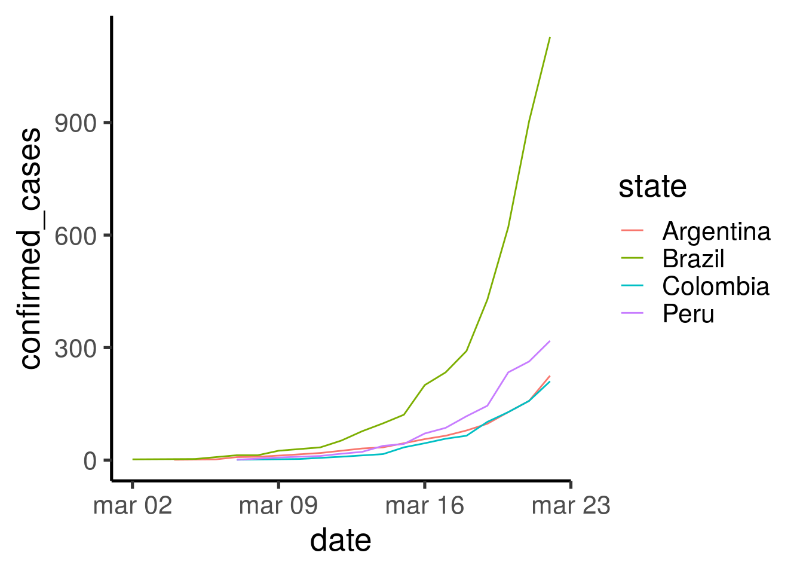
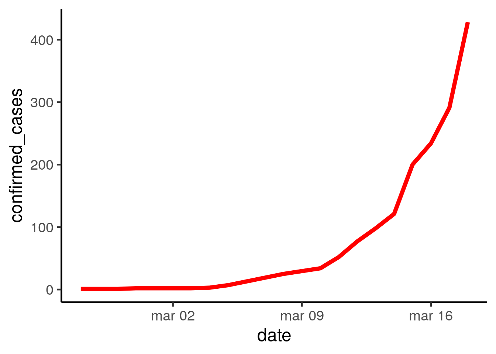
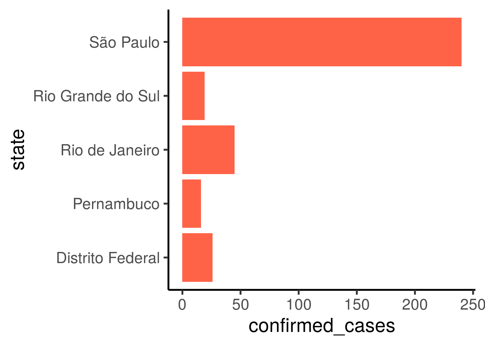

covid19br
Você pode instalar a versão de desenvolvimento do pacote covid19br no Github:
O pacote covid19br disponibiliza três bancos de dados com o histórico do número de casos de corona vírus no Brasil (covid-19):
Para acessar os dados diretamente no seu computador. Após instalar, carregue o pacote covid19br dentro do Programa R. Pronto, você já tem acesso aos três bancos de dados atualizados disponíveis como objetos no seu ambiente de R (environment). Veja como é fácil acessar:
library(covid19br)
head(covid_br)
#> # A tibble: 6 x 9
#> region state state_ID state_uid suspected_cases confirmed_cases
#> <lgl> <chr> <chr> <lgl> <dbl> <dbl>
#> 1 NA Braz… BR NA 20 1
#> 2 NA Braz… BR NA 132 1
#> 3 NA Braz… BR NA 182 1
#> 4 NA Braz… BR NA 207 2
#> 5 NA Braz… BR NA 252 2
#> 6 NA Braz… BR NA 433 2
#> # … with 3 more variables: not_confirmed_cases <dbl>, deaths <dbl>, date <date>
head(covid_states)
#> # A tibble: 6 x 9
#> region state state_ID state_uid suspected_cases confirmed_cases
#> <chr> <fct> <fct> <fct> <dbl> <dbl>
#> 1 Norde… Ceará CE 23 0 0
#> 2 Norde… Para… PB 25 1 0
#> 3 Norde… Pern… PE 26 1 0
#> 4 Norde… Bahia BA 29 0 0
#> 5 Sudes… Mina… MG 31 2 0
#> 6 Sudes… Espí… ES 32 1 0
#> # … with 3 more variables: not_confirmed_cases <dbl>, deaths <dbl>, date <date>
head(covid_regions)
#> # A tibble: 6 x 9
#> region state state_ID state_uid suspected_cases confirmed_cases
#> <chr> <lgl> <lgl> <lgl> <dbl> <dbl>
#> 1 Centr… NA NA NA 0 0
#> 2 Norde… NA NA NA 2 0
#> 3 Sudes… NA NA NA 16 1
#> 4 Sul NA NA NA 2 0
#> 5 Centr… NA NA NA 10 0
#> 6 Norde… NA NA NA 15 0
#> # … with 3 more variables: not_confirmed_cases <dbl>, deaths <dbl>, date <date># Carregue os pacotes necessários
library(dplyr)
library(ggplot2)
library(covid19br)
# Quais são os 5 estados com o maior número de casos confirmados?
top5 <-
covid_states %>%
filter(date == "2020-03-18") %>%
top_n(n = 5, wt = confirmed_cases) %>%
select(state, confirmed_cases) %>%
arrange(desc(confirmed_cases))
top5
#> # A tibble: 5 x 2
#> state confirmed_cases
#> <fct> <dbl>
#> 1 São Paulo 240
#> 2 Rio de Janeiro 45
#> 3 Distrito Federal 26
#> 4 Rio Grande do Sul 19
#> 5 Pernambuco 16
# Faça um gráfico
ggplot(top5, aes(y = confirmed_cases, x = state)) +
geom_col(fill = "tomato") +
theme_classic(base_size = 20) +
coord_flip()
# Carregue os pacotes necessários
library(dplyr)
library(ggplot2)
library(covid19br)
# Faça um gráfico
ggplot(covid_br, aes(y = confirmed_cases, x = date)) +
geom_line(color = "red", size = 2) +
theme_classic(base_size = 18)
# Carregue os pacotes necessários
library(dplyr)
library(ggplot2)
library(covid19br)
# Faça um gráfico
ggplot(covid_regions, aes(y = confirmed_cases, x = date, color = region)) +
geom_line() +
theme_classic(base_size = 18) 
No R, a documentação para o conjunto de dadoscovid19br pode ser acessada com o comando padrão help (por exemplo,? covid_br_all e ? covid_br_states).
Para uma descrição online do conjunto de dados, consulte referência.
Para acessar o código fonte do pacote consulte o repositório no Github.